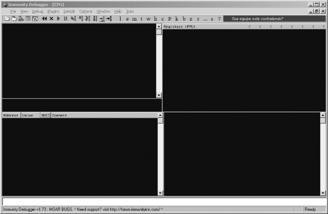

5.2 Immunity Debugger 101
在研究强大的 immlib 库之前，先看下 Immunity 的界面。

图 5-1:Immunity 调试器主界面
调试器界面被分成 5 个主要的块。左上角是 CPU 窗口，显示了正在处理的代码的反汇 编指令。右上角是寄存器窗口，显示所有通用寄存器。左下角是内存窗口，以十六进制的形 式显示任何被选中的内存快。右下角是堆栈窗口，显示调用的堆栈和解码后的函数参数（任何原生的 API 调用）。最底下白色的窗口是命令栏，你能够像 WindDbg 一样使用命令控制调 试器，或者执行 PyCommands。
5.2.1 PyCommands
在 Immunity 中执行 Python 的方法即使用 PyCommands。PyCommands 就是一个个 python 脚本文件，存放在 Immunity 安装目录的 PyCommands 文件夹里。每个 python 脚本都执行一 个任务（hooking，静态分析等待），相当于一个 PyCommand。每个 PyCommand 都有一个 特定的结构。以下就是一个基础的模型:
from immlib import *
def main(args):
# Instantiate a immlib.Debugger instance
imm = Debugger()
return "[*] PyCommand Executed!"
PyCommand 有两个必备条件。一个 main()函数，只接收一个参数（由所有参数组成的 python 列表）。另一个必备条件是在函数执行完成的时候必须返回一个字符串，最后更新在 调试器主界面的状态栏。执行命令之前必须在命令前加一个感叹号。
!<scriptname>
5.2.2 PyHooks
Immunity 调试器包含了 13 总不同类型的 hook。每一种 hook 都能单独实现，或者嵌入 PyCommand。
BpHook/LogBpHook
当一个断点被触发的时候，这种 hook 就会被调用。两个 hook 很相似，除了 BpHook 被 触发的时候，会停止被调试的进程，而 LogBpHook 不会停止被调试的进程。
AllExceptHook
所有的异常的都会触发这个 hook。
PostAnalysisHook
在一个模块被分析完成的时候，这种 hook 就会被触发。这非常有用，当你在在模块分 析完成后需要进一步进行静态分析的时候。记住，在用 immlib 对一个模块进行函数和基础 块的解码之前必须先分析这个模块。
AccessViolationHook
这个 hook 由访问违例触发。常用于在 fuzz 的时候自动化捕捉信息。
LoadDLLHook/UnloadDLLHook
当一个 DLL 被加载或者卸载的时候触发。
CreateThreadHook/ExitThreadHook
当一个新线程创建或者销毁的时候触发。
CreateProcessHook/ExitProcessHook
当目标进程开始或者结束的时候触发。
FastLogHook/STDCALLFastLogHook
这两种 hook 利用一个汇编跳转，将执行权限转移到一段 hook 代码用以记录特定的寄存 器，和内存数据。当函数被频繁的调用的时候这种 hook 非常有用；第六章将详细讲解。
以下的 LogBpHook 例子代码块能够作为 PyHook 的模板。
from immlib import *
class MyHook( LogBpHook ):
def init ( self ):
LogBpHook. init ( self )
def run( regs ):
# Executed when hook gets triggered
我们重载了 LogBpHook 类，并且建立了 run()函数（必须）。当 hook 被触发的时候，所 有的 CPU 寄存器，以及指令都将被存入 regs，此时我们就可以修改它们了。regs 是一个字 典，如下访问相应寄存器的值：
regs["ESP"]
hook 可以定义在 PyCommand 里，随时调用。也可以写成脚本放入 PyHooks 目录。每 次启动 Immunity 都会制动加载这些目录。接下来看些实例。